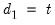
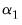
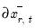
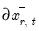

The item on the menu allows you to view either a or a . The graph shows the model selection value for the twenty “best” models. If you use either the Akaike Information Criterion (AIC), the Schwarz Criterion (BIC), or the Hannan-Quinn (HQ) criterion, the graph will show the twenty models with the lowest criterion value. If you choose the Adjusted R-squared as the model selection criteria, the graph will show the twenty models with the highest Adjusted R-squared. The table form of the view shows the log-likelihood value, the AIC, BIC and HQ values, and the Adjusted R-squareds of the top twenty models in tabular form.
The Conditional Error Correction (CEC) and Error Correction (EC) representations of the ARDL specification (Equation (29.5) and
Equation (29.10)) offer easy-to-interpret representations of the cointegrating relationship between the dependent variable and the explanatory variables.
By default, linear ARDL estimation results are displayed using the IDT representation Equation (29.1) while by default nonlinear ARDL estimates are displayed using the Conditional Error Correction (CEC) and Error Correction (EC) form
Equation (29.5).
The view displays the estimation results in the error corrections forms. Select from the menu of an estimated ARDL equation. EViews displays a spool with two tables.
The second node in the spool corresponds to results for the Error Correction (EC) representation of the equation (Equation (29.10) or
Equation (29.20)), highlighting the speed of adjustment to equilibrium in the cointegrating relationship. The results show the least squares estimates for the equation which employs the equilibrium error correction term in place of the individual cointegrating series:
Here, the error correction term  given by Equation (29.9)
given by Equation (29.9) and
Equation (29.19) is included among the regressors and is denoted as “COINTEQ”. The coefficient associated with this regressor is the speed of adjustment to equilibrium in each period. If variables are indeed cointegrated, we typically expect this coefficient to be negative and highly significant.
The view displays information about the error correction term

representing the cointegrating relation. Select from the menu of an estimated ARDL equation to display a spool containing two tables and a graph.
When the hypothesis in Equation (29.28) is rejected so that cointegration is possible, we proceed to perform a
t-test of significance of the error correction parameter

in
Equation (29.10). As in the case of Augmented Dickey-Fuller unit-root tests, critical values for the test statistic are non-standard. If the null hypothesis of

is not rejected, there is no long run relationship. Alternatively, should we reject but be unable to reject the sub-hypothesis , the cointegrating relationship is degenerate. Otherwise, cointegration exists.
When deterministics contribute to the error correction term, they are implicitly projected onto the span of the cointegrating vector. If the ARDL model in Equation (29.1) includes a constant and a trend, say and , the constants and trend coefficients must respect the restrictions implied by the expressions for

and . These restrictions translate into slight modifications of the null and alternative hypotheses in
Equation (29.28).
To perform the bounds test, click on . The results are presented in a spool. Below the table of long run coefficient estimates are two additional tables, respectively titled as the

-Bounds Test and the

-Bounds Test.
Recall that the NARDL CEC representation in Equation (29.20) is quite general and can accommodate asymmetries in different combinations of short and long-run dynamics. In particular, consider the following two sets of symmetry restrictions:
Naturally, one can test for symmetry formally by performing the usual t-test or
F-test of parameter equality. For example, testing for symmetry for a specific long-run (LR) variable, say

, is equivalent to the following hypothesis:
To perform the symmetry test, select from the menu of a nonlinear asymmetric NARDL equation:
Dynamic multipliers (DM) are a familiar concept which measures the marginal contribution of an explanatory variable to the dependent variable. A natural extension of the concept for time series analysis is the idea of
cumulative dynamic multipliers (CDM). This is the cumulative sum of dynamic multipliers at each point in time, starting with a point in time

and running through for horizon length .
for shocks , and then forming the dynamic forecasts of

from

to

using the estimated equation, actual regressors, and the substituted modified regressor:
To display CDM graphs for each of the explanatory variables, click on EViews will open a dialog containing display and computation settings:
Click on to continue. EViews will open a spool view, with each node in the spool containing the CDM graph corresponding to one of the explanatory variables.
The proc makes a series in the workfile containing the cointegrating series, which contains (
Equation (29.9) or
Equation (29.19)) for every observation in the estimation sample.


.
coefficients in Equation (29.8) and the
and
coefficients in Equation (29.18).
(Equation (29.9) or Equation (29.19)) for every observation in the estimation sample.
In contrast, Pesaran (2001) proposes a test for cointegration that is robust to whether variables of interest are,
, or mutually cointegrated. These bounds tests are formulated as standard F-test or Wald tests of parameter significance in the cointegrating relationship of the CEC model Equation (29.8),
(number of periods to compute the multipliers) in the Horizon edit field. The multiplier graphs will be produced for the period from to
where
is the end of the estimation sample.
The shock evolution CDM graph displays the response to a one unit positive change in the symmetric and positive asymmetric cumulated differences, and the response to a one unit negative change in cumulated differences in the negative asymmetric case. Note that in this case, the graphswill converge to the theoretical cumulative dynamic multiplier long-run values.The dynamic multiplier CDM graph shows the response to a one unit positive change in symmetric and asymmetric cumulated differences, but in contrast to shock evolution, models an “improvement” producing a one unit positive increase (reduction of one unit of negative change) in the negative cumulative differences. . This requirement not only requires pre-testing for the presence of unit roots in each of the endogenous variables, but is also subject to misclassification.
. This requirement not only requires pre-testing for the presence of unit roots in each of the endogenous variables, but is also subject to misclassification.  , or all variables being
, or all variables being  . When the test statistic is below the lower critical value, we fail to reject the null and conclude that cointegration is not possible. Alternately, when the test statistic is above the upper critical value, we reject the null and conclude that cointegration is possible. In either case, knowledge of the cointegrating rank is not necessary. If the statistic falls between the lower and upper critical values, the test is inconclusive.
. When the test statistic is below the lower critical value, we fail to reject the null and conclude that cointegration is not possible. Alternately, when the test statistic is above the upper critical value, we reject the null and conclude that cointegration is possible. In either case, knowledge of the cointegrating rank is not necessary. If the statistic falls between the lower and upper critical values, the test is inconclusive. and
and  , so the restrictions and
, so the restrictions and  are assumed to hold:
are assumed to hold: , and the restrictions and are assumed to hold. There is no change to the
, and the restrictions and are assumed to hold. There is no change to the  and , and the restrictions
and , and the restrictions  and are assumed hold:
and are assumed hold: and
and  and the restrictions
and the restrictions  and
and  are assumed hold. There is no change to the
are assumed hold. There is no change to the  - and
- and  - statistics along with their associated I(0) (lower) and I(1) (upper) critical value bounds for the null hypotheses of no levels relationship between the dependent variable and the regressors in the CEC model. The critical values are provided for significance levels 10%, 5%, 2.5%, and 1%, respectively. The
- statistics along with their associated I(0) (lower) and I(1) (upper) critical value bounds for the null hypotheses of no levels relationship between the dependent variable and the regressors in the CEC model. The critical values are provided for significance levels 10%, 5%, 2.5%, and 1%, respectively. The  -Bounds test in particular is a parameter significance test on the lagged value of the dependent variable. Since the distribution of this test is non-standard, the
-Bounds test in particular is a parameter significance test on the lagged value of the dependent variable. Since the distribution of this test is non-standard, the  -value provided in the regression output of the CEC regression is not compatible with this distribution, although the
-value provided in the regression output of the CEC regression is not compatible with this distribution, although the  -statistic is valid. Accordingly, any inference must be conducted using the
-statistic is valid. Accordingly, any inference must be conducted using the  -Bounds test critical values provided.
-Bounds test critical values provided. - critical value tables now present the critical values computed under an asymptotic regime (sample size equal to 1000) and referenced from PSS(2001), in addition to providing critical values for finite sample regimes (sample sizes running from 30 to 80 in increments of 5) and referenced from Narayan (2005).
- critical value tables now present the critical values computed under an asymptotic regime (sample size equal to 1000) and referenced from PSS(2001), in addition to providing critical values for finite sample regimes (sample sizes running from 30 to 80 in increments of 5) and referenced from Narayan (2005). so that the CEC reduces to
so that the CEC reduces to
 . Note that as
. Note that as  , .
, . and . Conceptually, for a given regressor, a single positive unitary shock is introduced at
and . Conceptually, for a given regressor, a single positive unitary shock is introduced at  , where
, where  is the end of the estimation sample, holding all other regressors constant. The dynamic evolution of the dependent variable is then computed from
is the end of the estimation sample, holding all other regressors constant. The dynamic evolution of the dependent variable is then computed from  to
to  and compared to baseline dynamic forecasts.
and compared to baseline dynamic forecasts. and use this value to obtain the forecasts
and use this value to obtain the forecasts  for to obtain the forecasts , and then substituting in
for to obtain the forecasts , and then substituting in  for
for  to obtain the forecasts
to obtain the forecasts  in
in